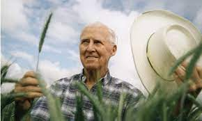

Dr. Norman Borlaug

Dr. Norman Borlaug
Dr. Norman Borlaug was an American biologist known for his work in agriculture...
More about Dr. Norman BorlaugDr. Norman Borlaug was an American biologist known for his work in agriculture...
More about Dr. Norman Borlaug